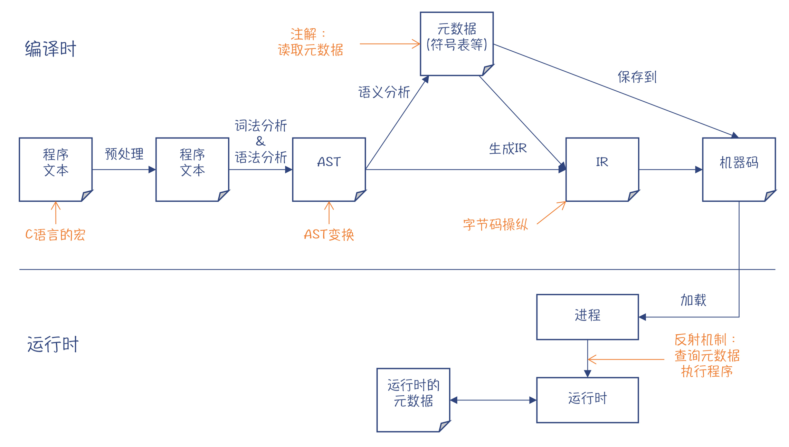
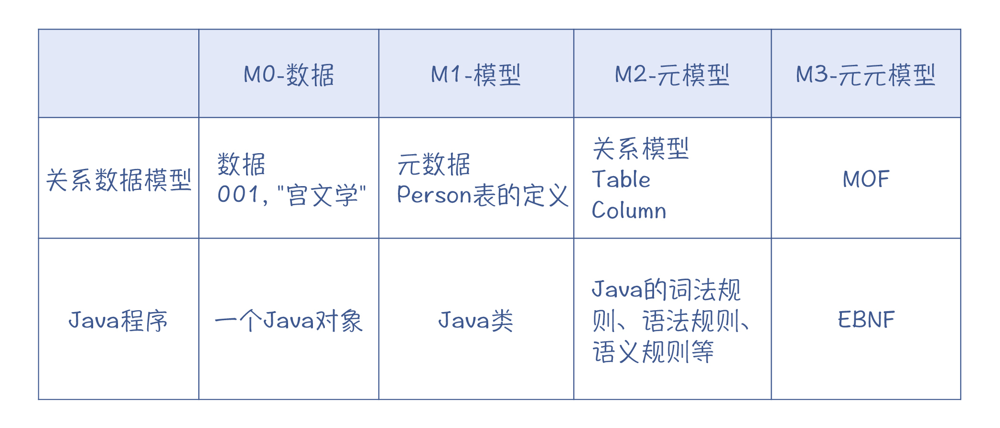
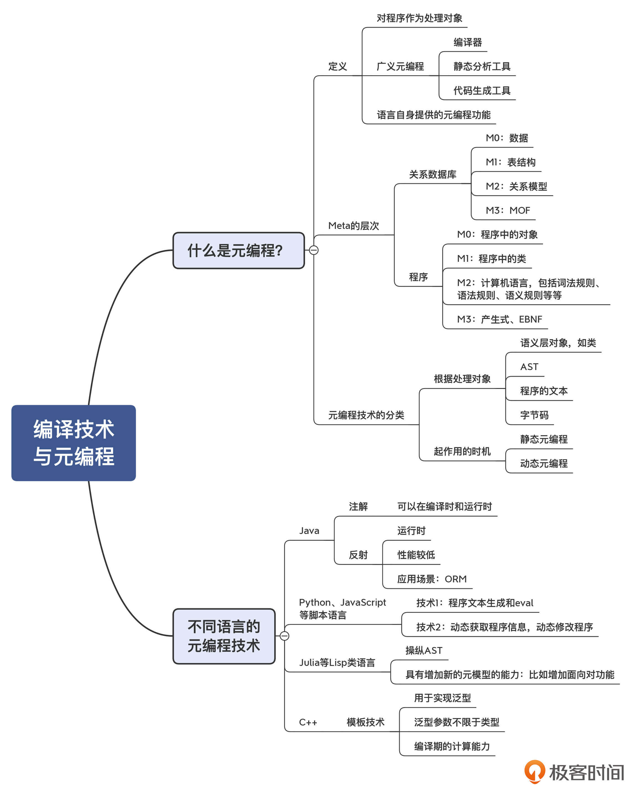

- 00 学习指南 如何学习这门编译原理实战课？.md.html
- 00 开篇词 在真实世界的编译器中游历.md.html
- 01 编译的全过程都悄悄做了哪些事情？.md.html
- 02 词法分析：用两种方式构造有限自动机.md.html
- 03 语法分析：两个基本功和两种算法思路.md.html
- 04 语义分析：让程序符合语义规则.md.html
- 05 运行时机制：程序如何运行，你有发言权.md.html
- 06 中间代码：不是只有一副面孔.md.html
- 07 代码优化：跟编译器做朋友，让你的代码飞起来.md.html
- 08 代码生成：如何实现机器相关的优化？.md.html
- 09 Java编译器（一）：手写的编译器有什么优势？.md.html
- 10 Java编译器（二）：语法分析之后，还要做些什么？.md.html
- 11 Java编译器（三）：属性分析和数据流分析.md.html
- 12 Java编译器（四）：去除语法糖和生成字节码.md.html
- 13 Java JIT编译器（一）：动手修改Graal编译器.md.html
- 14 Java JIT编译器（二）：Sea of Nodes为何如此强大？.md.html
- 15 Java JIT编译器（三）：探究内联和逃逸分析的算法原理.md.html
- 16 Java JIT编译器（四）：Graal的后端是如何工作的？.md.html
- 17 Python编译器（一）：如何用工具生成编译器？.md.html
- 18 Python编译器（二）：从AST到字节码.md.html
- 19 Python编译器（三）：运行时机制.md.html
- 20 JavaScript编译器（一）：V8的解析和编译过程.md.html
- 21 JavaScript编译器（二）：V8的解释器和优化编译器.md.html
- 22 Julia编译器（一）：如何让动态语言性能很高？.md.html
- 23 Julia编译器（二）：如何利用LLVM的优化和后端功能？.md.html
- 24 Go语言编译器：把它当作教科书吧.md.html
- 25 MySQL编译器（一）：解析一条SQL语句的执行过程.md.html
- 26 MySQL编译器（二）：编译技术如何帮你提升数据库性能？.md.html
- 27 课前导读：学习现代语言设计的正确姿势.md.html
- 28 前端总结：语言设计也有人机工程学.md.html
- 29 中端总结：不遗余力地进行代码优化.md.html
- 30 后端总结：充分发挥硬件的能力.md.html
- 31 运行时（一）：从0到语言级的虚拟化.md.html
- 32 运行时（二）：垃圾收集与语言的特性有关吗？.md.html
- 33 并发中的编译技术（一）：如何从语言层面支持线程？.md.html
- 34 并发中的编译技术（二）：如何从语言层面支持协程？.md.html
- 35 并发中的编译技术（三）：Erlang语言厉害在哪里？.md.html
- 36 高级特性（一）：揭秘元编程的实现机制.md.html
- 37 高级特性（二）：揭秘泛型编程的实现机制.md.html
- 38 综合实现（一）：如何实现面向对象编程？.md.html
- 39 综合实现（二）：如何实现函数式编程？.md.html
- 40 成果检验：方舟编译器的优势在哪里？.md.html
- 不定期加餐1 远程办公，需要你我具备什么样的素质？.md.html
- 不定期加餐2 学习技术的过程，其实是训练心理素质的过程.md.html
- 不定期加餐3 这几年，打动我的两本好书.md.html
- 不定期加餐4 从身边的牛人身上，我学到的一些优秀品质.md.html
- 不定期加餐5 借助实例，探究C++编译器的内部机制.md.html
- 划重点 7种编译器的核心概念与算法.md.html
- 期末答疑与总结 再次审视学习编译原理的作用.md.html
- 热点问题答疑 如何吃透7种真实的编译器？.md.html
- 用户故事 易昊：程序员不止有Bug和加班，还有诗和远方.md.html
- 知识地图 一起来复习编译技术核心概念与算法.md.html
- 结束语 实战是唯一标准！.md.html
- 捐赠
36 高级特性（一）：揭秘元编程的实现机制
你好，我是宫文学。
作为一名技术人员，我想你肯定知道什么是编程，那你有没有听说过“元编程（Meta-Programming）”这个概念呢？
元编程是计算机语言提供的一项重要能力。这么说吧，如果你要编写一些比较厉害的程序，像是Java世界里的Spring、Hibernate这样的库，以及C++的STL库等这样级别的程序，也就是那些通用性很强、功能强大的库，元编程功能通常会给予你巨大的帮助。
我还可以从另一个角度来评价元编程功能。那就是善用计算机语言的元编程功能，某种意义上能让你修改这门语言，让它更满足你的个性化需求，为你量身打造！
是不是觉得元编程还挺有意思的？今天这一讲，我就带你来理解元编程的原理，并一起探讨如何用编译技术来支持元编程功能的实现。
首先，我们需要透彻地了解一下什么是元编程。
什么是元编程（Meta-Programming）？
元编程是一种把程序当做数据来处理的技术。因此，采用元编程技术，你可以把一个程序变换成另一个程序。
图1：元编程处理的对象是程序
那你可能要问了，既然把程序作为处理对象的技术就是元编程技术，那么编译器不就是把程序作为处理对象的吗？经过处理，编译器会把源代码转换成目标代码。类似的还有对源代码的静态分析工具、代码生成工具等，都算是采用了元编程技术。
不过，我们在计算机语言里说的元编程技术，通常是指用这门语言本身提供的功能，就能处理它自己的程序。
比如说，在C语言中，你可以用宏功能。经过C语言的预处理器处理以后，那些宏就被转换成了另外的代码。下面的MUL宏，用起来像一个函数，但其实它只是做了一些字符串的替换工作。它可以说是最原始的元编程功能了。你在阅读像Python和Julia的编译器时，就会发现有不少地方采用了宏的功能，能让代码更简洁、可读性更好。
#define MUL(a,b) (a*b)
MUL(2,3) //预处理后变成(2*3)
再拿Java语言举个例子。Java语言对元编程提供了多重支持，其中之一是注解功能。我们在解析Java编译器的时候已经发现，Java编译器会把所编译的程序表示成一个对象模型。而注解程序可以通过这个对象模型访问被注解的程序，并进行一些处理，比如生成新的程序。所以，这也是把程序作为数据来处理。
除了注解以外，Java还提供了反射机制。通过反射机制，Java程序可以在运行时获取某个类有哪些方法、哪些属性等信息，并可以动态地运行该程序。你看，这同样是把程序作为数据来处理。
像Python和JavaScript这样的脚本语言，其元编程能力就更强了。比如说，你用程序可以很容易地查询出某个对象都有哪些属性和方法，甚至可以给它们添加新的属性和方法。换句话说，你可以很容易地把程序作为数据进行各种变换，从而轻松地实现一些灵活的功能。这种灵活性，是很多程序员特别喜欢Python和JavaScript这样的语言的原因。

图2：各种不同的元编程技术起作用的时机
好了，到现在为止，你已经了解了元编程的基本特征：把程序当做数据去处理。接下来，我再带你更深入地了解一下元编程，并把不同的元编程技术做做分类。
理解Meta的含义、层次以及作用
首先，我们来注意一下Meta这个词缀的意思。维基百科中的解释是，Meta来自希腊文，意思是“在……之后（after）”和“超越……（beyond）”。加上这个词缀后，Meta-Somthing所形成的新概念就会比原来的Somthing的概念的抽象度上升一层。
举例来说，Physics是物理学的意思，表示看得见摸得着的物理现象。而Metaphysics就代表超越了物理现象的学问，也就是形而上学。Data是数据，而Metadata是元数据，是指对数据特性的描述，比如它是什么数据类型、取值范围是什么，等等。
还有，一门语言我们叫做Language，而语法规则（Grammar）是对一门语言的特点的描述，所以语法规则可以看做是Metalanguage。
其次，在理解了Meta的概念以后，我再进一步告诉你，Meta是可以分层次的。你可以对Meta再超越一层、抽象一层，就是Meta-Meta。理解Meta的层次，对于你深入理解元编程的概念非常重要。
拿你很熟悉的关系数据库来举个例子吧，看看不同的Meta层次都是什么意思。
首先是M0层，也就是关系数据库中的数据。比如一条人员数据，编号是“001”，姓名是“宫文学”等。一个数据库的使用者，从数据库中查出了这条数据，我们说这个人是工作在M0层的。
比M0抽象一层的是M1层，也就是Metadata，它描述了数据库中表的结构。比如，它定义了一张人员表，并且规定里面有编号、姓名等字段，以及每个字段的数据类型等信息。这样看来，元数据实际上是描述了一个数据模型，所以它也被叫做Model。一个工程师设计了这个数据库表的结构，我们说这个工程师是工作在M1层的。基于该工程师设计的数据库表，你可以保存很多M0层的人员数据：张三、李四、王五，等等。
比M1再抽象一层的是M2层。因为M1层可以叫做Model，所以M2层可以叫做Metamodel，也就是元模型。在这个例子中，Metamodel描述的是关系数据模型：它是由一张张的表（Table）构成的；而每张表，都是由字段构成的；每个字段，都可以有数据类型、是否可空等信息。发明关系数据模型，以及基于这个模型设计出关系数据库的大师，是工作在M2层的。基于关系模型，你可以设计出很多M1层的数据库表：人员表、订单表、商品表，等等。
那么有没有比Metamodel更抽象的层次呢？有的。这就是M3层，叫做Meta-Metamodel。这一层要解决的问题是，如何去描述关系数据模型和其他的元模型？在UML标准中，有一个MOF（Meta Object Facility）的规范，可以用来描述关系数据库、数据仓库等元模型。它用类、关联、数据类型和包这些基本要素来描述一个元模型。
好，通过关系数据库这个例子，现在你应该理解了不同的Meta层次是什么概念。那我们再把这个概念应用到计算机语言领域，也是一样的。
假设你使用一门面向对象的语言写了一个程序。这个程序运行时，在内存里创建了一个Person对象。那这个对象属于M0层。
而为了创建这个Person对象，你需要用程序设计一个Person类。从这个意义上来看，我们平常写的程序属于M1层，也就是相当于建立了一个模型来描述现实世界。你编写的订票程序就是对真实世界中的购票行为建立了一个模型，而你编写的游戏当然也是建立了一个逼真的游戏模型。
那么，你要如何才能设计一个Person类，以及一个完整的程序呢？这就需要用到计算机语言。计算机语言对应着M2层。它提供了类、成员变量、方法、数据类型、本地变量等元素，用于设计你的程序。我们对一门计算机语言的词法规则、语法规则和语义规则等方面的描述，就属于M2层，也就是一门计算机语言的元模型。而编译器就是工作在M2层的程序，它会根据元模型，也就是词法规则、语法规则等，来做程序的翻译工作。
我们在描述词法规则、语法规则的时候，曾经用到产生式、EBNF这些工具。这些工具是属于M3层的。你可以用我们前面说过的一个词，也就是Metalanguage来称呼这一层次。
这里我用了一个表格，来给你展示下关系数据模型与Java程序中不同的Meta层次。

元编程技术的分类
理解了Meta层次的概念以后，我们再来总结一下元编程技术都有哪些分类。
第一，元编程可以通过生成语义层对象来生成程序。
当我们操纵M1层的程序时，我们通常需要透过M2层的对象来完成，比如读取类和方法的定义信息。类和方法就是M2层的对象。Java的注解功能和反射机制，就是通过读取和操纵M2层的对象来完成的。
在学习编译原理的过程中，你知道了类、方法这些都是语义层次的概念，编译器保证了编译后的程序在语义上的正确性，所以你可以大胆地使用这些信息，不容易出错。如果你要在运行时动态地调用方法，运行时也会提供一定的检查机制，减少出错的可能性。
第二，元编程可以通过生成AST来生成程序。
你同样知道，一个程序也可以用AST来表达。所以，我们能不能让程序直接读取、修改和生成AST呢？这样对AST的操纵，就等价于对程序的操纵。
答案是可以的。所有Lisp家族的语言都采用了这种元数据技术，Julia就是其中之一。Lisp语言可以用S表达式来表示程序。S表达式是那种括号嵌套括号的数据结构，其实就是一棵AST。你可以用宏来生成S表达式，也就是生成AST。
不过，让程序直接操作比较底层的数据结构，其代价是可能生成的AST不符合语义规则。毕竟，AST只表达了语法规则。所以，用这种方式做元编程需要小心一些，不要生成错误的程序。同时，这种元编程技术对程序员来说，学习的成本也更高，因为他们要在比较低的概念层次上工作。
第三，元编程可以通过文本字符串来生成程序。
当然，你还可以把程序表达成更加低端的格式，就是一些文本字符串而已。我们前面说过，C语言的宏，其实就是做字符串的替换。而一些脚本语言，通常也能接受一个文本字符串作为程序来运行，比如JavaScript的eval()函数就可以接受一个字符串作为参数，然后把字符串作为程序来运行。所以，在JavaScript里的一项非常灵活的功能，就是用程序生成一些字符串，然后用eval()函数来运行。当然你也能预料到，用越原始的模型来表示程序，出错的可能性就越大。所以有经验的程序员，都会很谨慎地使用类似eval()这样的功能。但无论如何，这也确实是一种元编程技术。
第四，元编程可以通过字节码操纵技术来生成字节码。
那么，除了通过生成语义层对象、AST和文本来生成程序以外，对于Java这种能够运行字节码的语言来说，你还可以通过字节码操纵技术来生成字节码。这种技术一般不是由语言本身提供的能力，而是由第三方工具来实现的，典型的就是Spring。
好，到这里，我们就探讨完了通过元编程技术由程序生成程序的各种方式。下面我们再通过另一个维度来讨论一下元编程技术。这个维度是元编程技术起作用的时机，我们可以据此分为静态元编程和动态元编程。
静态元编程技术只在编译期起作用。比如C++的模板技术和把Java注解技术用在编译期的情况（在下面会具体介绍这两种技术）。一旦编译完毕以后，元程序跟普通程序一样，都会变成机器码。
动态元编程技术会在运行期起作用。这方面的例子是Java的反射机制。你可以在运行期加载一个类，来查看它的名称、都有哪些方法，然后打印出来。而为了实现这种功能，Java程序必须在class文件里保存这个类的Model，比如符号表，并通过M2层的接口，来查询类的信息。Java程序能在运行期进行类型判断，也是基于同样的原理。
好，通过上面的介绍，我想你对元编程的概念应该有比较清晰的理解了。那接下来，我们就来看看不同语言具体实现元编程的方式，并且一起探讨下在这个过程中应该如何运用编译技术。
不同语言的元编程技术
我们讨论的语言包括几大类，首先是Java，接着是Python和JavaScript这样的脚本语言，然后是Julia这样的Lisp语言，最后是C++的模板技术等一些很值得探讨的元编程技术。
Java的元编程技术
在分析Java的编译器的时候，我们已经解析了它是如何处理注解的，注解就是一种元编程技术。在我们举的例子中，注解是在编译期就被处理掉了。
@Retention(RetentionPolicy.SOURCE) //注解用于编译期处理
@Target(ElementType.TYPE) //注解是针对类型的
public @interface HelloWorld {
}
当时我们写了一个简单的注解处理程序，这个程序，能够获取被注解的代码的元数据（M1层的信息），比如类名称、方法名称等。这些元数据是由编译器提供的。然后，注解处理程序会基于这些元数据生成一个新的Java源代码，紧接着该源代码就会被编译器发现并编译掉。
通过这个分析，你会发现注解处理过程自始至终都借助了编译器提供的能力：先是通过编译器查询被注解的程序的元数据，然后生成的新程序也会被编译器编译掉。所以你能得出一个结论：所谓元编程，某种意义上就是由程序来调用编译器提供的能力。
刚刚我们探究的是在编译期使用元编程技术。那么在运行期，Java提供了反射机制，来动态地获取程序的元数据，并操纵程序的执行。
举个例子。假设你写了一个简单的ORM（Object-Relational Mapping）程序，能够把Java对象自动保存到数据库中。那么你就可以通过反射机制，来获取这个对象都有哪些属性，然后读取这些属性的值，并生成一个正确的SQL语句来完成对象的保存动作。比如，对于一个Person对象，ORM程序通过反射机制会得知它有name和country两个字段，再从对象里读取name和字段的值，就会生成类似”Insert into Person (name, age), values(“Richard”, “China”)“这样的SQL语句。
从这个例子中，你能看出元编程的强大：只需要写一个通用的程序，就能用于各种不同的类。这些类在你写ORM程序的时候，根本不需要提前知道，因为ORM程序工作在M2层。给你任何一个类，你都能获得它的方法和属性信息。
不过这种反射机制也是有短板的，就是性能比较低。基于反射机制编写的程序的效率，比同样功能的静态编译的程序要低好几倍。所以，如何提升运行期元编程功能的性能，是编译技术研究的一个重点。
OK，接下来我们看看Python、JavaScript等脚本语言的元编程技术。
Python、JavaScript等脚本语言的元编程技术
对于像Python、JavaScript和Ruby这样的脚本语言，它们实现起元编程技术来就更加简单。
最简单的元编程方式，我们前面也提到过，就是动态生成程序的文本字符串，然后动态编译并执行。这种方式虽然简单粗暴，容易出错，有安全隐患，但在某些特殊场景下还确实很有用。
不过如有可能，我们当然愿意使用更优雅的元编程方式。这几种脚本语言都有几个特点，使得操纵和修改已有程序的步骤会变得特别简单：
- 第一个特点，就是用程序可以很方便地获取对象的元数据，比如某个对象有什么属性、什么方法，等等。
- 第二个特点，就是可以很容易地为对象添加属性和方法，从而修改对象。
这些脚本语言做元编程究竟有多么容易呢？我给你举个Python语言的例子。
我们在解析Python编译器的时候，曾提到过metaclass（元类）。metaclass能够替代缺省的Type对象，控制一个类创建对象的过程。通过你自己的metaclass，你可以很容易地为所创建的对象的方法添加修饰，比如输出调试信息这样的AOP功能。
所以，很多喜欢Python、JavaScript和Ruby语言的工程师，很大一部分原因，都是因为这些语言非常容易实现元编程，因此能够实现出很多强大的库。
不过，在灵活的背后，脚本语言的元编程技术通常要付出性能的代价。比如，采用元编程技术，程序经常会用Decorator模式对原有的函数或方法做修饰，这样会增加函数调用的层次，以及其他一些额外的开销，从而降低程序的性能。
好，接下来，我们说说Julia等类Lisp语言的元编程技术。
Julia等类Lisp语言的元编程技术
前面我们已经说过，像Julia等类似Lisp的语言，它本来就是把程序看做数据的。它的程序结构，本来就是一个嵌套的树状结构，其实跟AST没啥区别。因此，只要在语言里提供一种方式，能够生成这些树状结构的数据，就可以很好地实现元编程功能了。
比如，下面的一段示例程序是用Common Lisp编写的。你能看出，程序的结构完全是一层层的括号嵌套的结构，每个括号中的第一个单词，都是一个函数名称，后面跟着的是函数参数。这个例子采用了Lisp的宏功能，把pred替换成合适的函数名称。当替换成>时，实现的是求最大值功能；而替换成<时，实现的是求最小值功能。
(defmacro maxmin(list pred) ；定义一个宏
`(let ((rtn (first ,list))) ;`后面是作为数据的程序
(do ((i 1 (1+ i)))
((>= i (length ,list)) rtn)
(when (,pred (nth i ,list) rtn);pred可以被替换成一个具体的函数名
(setf rtn (nth i ,list))))))
(defun mymax2 (list) ;定义一个函数，取一个列表的最大值
(maxmin list >))
(defun mymin2 (list) ;定义一个函数，取一个列表的最小值。
(maxmin list <)
这种能够直接操纵AST的能力让Lisp特别灵活。比如，在Lisp语言里，根本没有原生的面向对象编程模型，但你完全可以用它的元编程功能，自己构造一套带有类、属性、方法、继承、多态的编程模型，这就相当于构建了一个新的M2层的元模型。通常一个语言的元模型，也就是编程时所能使用的结构，比如是否支持类呀什么的，在设计语言的时候就已经固定了。但Lisp的元编程功能竟然能让你自己去定义这些语言特性，这就是一些小众的程序员特别热爱Lisp的原因。
C++的元编程技术
提到元编程，就不能不提一下C++的模板元编程（Template Metaprogramming）技术，它大大增强了C++的功能。
模板元编程技术属于静态元编程技术，也就是让编译器尽量在编译期做一些计算。这在很多场景中都有用。一个场景，就是提供泛型的支持。比如，List 是整型这样的值类型的列表，而List 是Student这种自定义类型的列表，你不需要为不同的类型分别开发List这样的容器类（在下一讲，我还会对泛型做更多的讲解）。
但模板元编程技术不仅仅可以支持泛型，也就是模板的参数可以不仅仅是类型，还可以是普通的参数。模板引擎可以在编译期利用这些参数做一些计算工作。我们来看看下面这个例子。这个例子定义了一个数据结构，它可以根据你传入的模板参数获得阶乘值。
如果这个参数是一个编译期的常数，那么模板引擎会直接把这个阶乘值计算出来，而不是等到运行期才做这个计算。这样能降低程序在运行时的计算量，同时又保持编程的灵活性。
template<int n>
struct Fact {
enum { RET = n * Fact<n-1>::RET }; //用一个枚举值代表阶乘的计算结果
};
template<> //当参数为1时，阶乘值是1
struct Fact<1> {
enum { RET = 1 };
};
int b = Fact<5>::RET; //在编译期就计算出阶乘值，为120
看到这里，利用你学过的编译原理，你能不能猜测出C++模板的实现机制呢？
我们也看到过在编译器里做计算的情况，比如说常数折叠，会在编译期计算出表达式的常数值，不用在运行期再去计算了。而在C++的模板引擎里，把这种编译器的计算能力大大地丰富了。不过，你仍然可以猜测出它的实现机制，它仍然是基于AST来做计算，生成新的AST。在这个过程中，像Fact<5>这种情况甚至会被计算出最终的值。C++模板引擎支持的计算如此复杂，以至于可以执行递归运算。
课程小结
今天这一讲，我们围绕元编程这个话题做了比较深入的剖析。
元编程，对于我们大多数程序员来说，是一个听上去比较高深的概念。但是，在学过编译原理以后，你会更容易理解元编程技术，因为编译器就是做元编程的软件。而各门语言中的元编程特性，本质上就是对编译器的能力的释放和增强。编译器要获得程序的结构信息，并对它们进行修改、转换，元编程做的是同样的事情。
我们学好编译原理以后，在元编程方面其实拥有巨大的优势。一方面，我们可以更加了解某门语言的元编程机制是如何工作的；另一方面，即使某些语言没有提供原生的元编程功能，或者是元编程功能不够强大，我们也仍然可以自己做一些工具，来实现元编程功能，这就是类似Spring这样的工具所做的事情。
本讲中关于Meta的层次的概念，是我特别向你推荐的一个思维模型。采用这个模型，你就知道不同的工作，是发生在哪一个抽象层级上。因而你也就能明白，为什么学习编译原理中用到的那些形式语言会觉得更加抽象。因为计算机语言的抽象层级就挺高的了，而用于描述计算机语言的词法和语法规则的语言，当然抽象层级更高。
我把这讲的思维导图也放在了这里，供你复习和参考。

一课一思
我在本讲举了ORM的例子。如果用你熟悉的语言来实现ORM功能，也就是自动根据对象的类型信息来生成合适的SQL语句，你会怎么做？
欢迎分享你的观点，也欢迎你把今天的内容分享给更多的朋友。感谢阅读，我们下一讲再见。
© 2019 - 2023 Liangliang Lee. Powered by gin and hexo-theme-book.